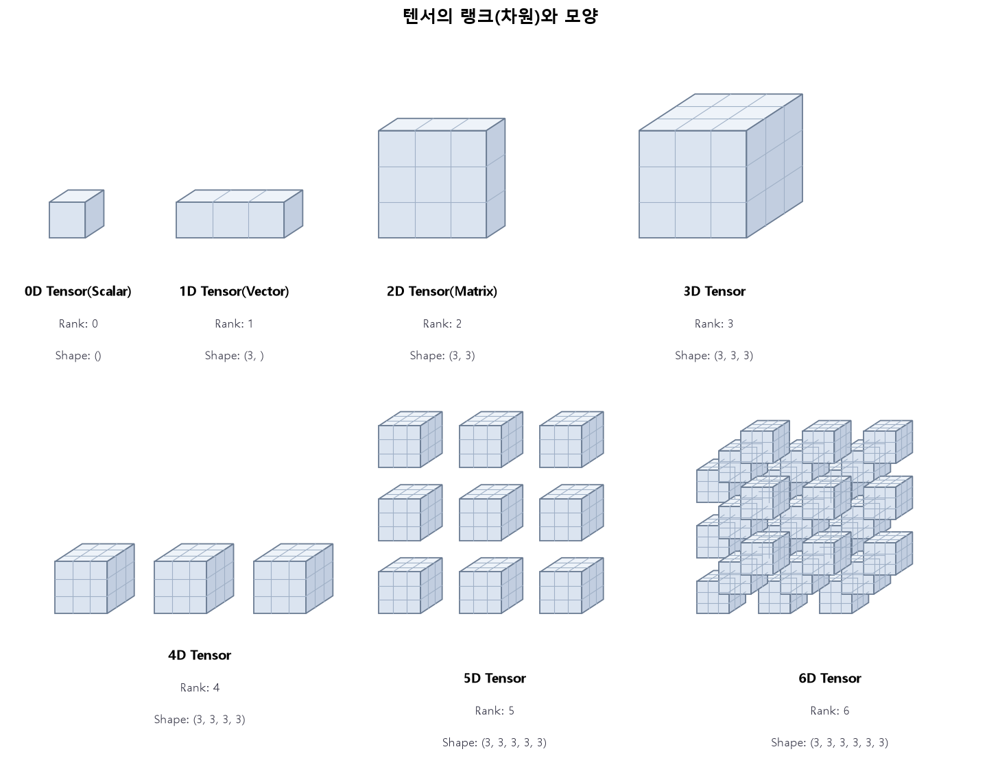
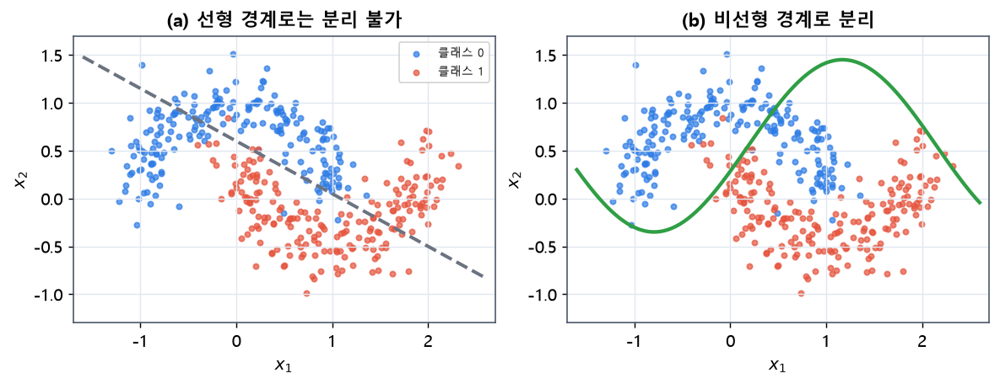
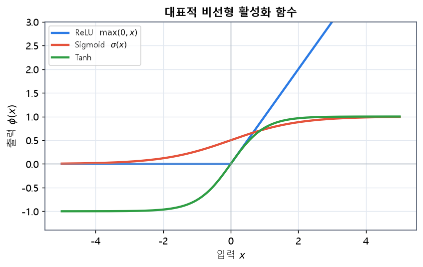
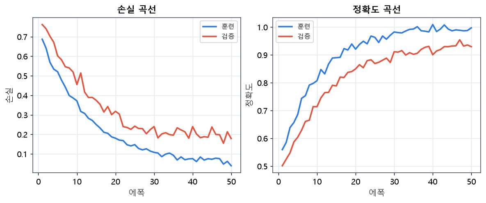

flowchart LR
D["데이터 (입력, 정답)"] --> M["모델 (함수)"]
M --> P["예측"]
P --> L["손실 함수 (예측 vs 정답)"]
L --> O["최적화 (파라미터 조정)"]
O -.->|"반복"| M
1 AI 모델 학습 개요
이 장에서는 딥러닝을 실습하기 위한 개발 환경을 갖추고, 넘파이 배열과 파이토치 텐서로 수치 연산을 다루는 방법을 익힙니다. 이어서 CPU와 GPU의 차이를 이해하고 데이터를 GPU로 올리는 방법을 배운 뒤, 이진 분류 다층 퍼셉트론(MLP)을 학습시키는 재사용 가능한 학습 루프 템플릿을 완성합니다. 이 템플릿은 앞으로 모든 장에서 뼈대로 재사용됩니다.
1.1 모델 학습이란 무엇인가
본격적인 실습에 앞서, “모델을 학습시킨다”는 말의 의미를 분명히 해 둘 필요가 있습니다. 인공지능 모델은 결국 입력을 출력으로 바꾸는 하나의 함수입니다. 예컨대 사진을 받아 개인지 고양이인지 확률을 내놓거나, 과거 기온을 받아 내일 기온을 예측하는 함수입니다. 이 함수의 동작은 수많은 파라미터(가중치)에 의해 결정되는데, 학습이란 이 파라미터를 데이터에 맞게 조정해, 함수가 원하는 입출력 관계를 잘 흉내 내도록 만드는 과정입니다.
이 과정은 세 가지 요소로 이루어집니다. 첫째는 모델로, 어떤 형태의 함수를 쓸지 정하는 구조입니다. 둘째는 손실 함수로, 현재 함수의 예측이 정답과 얼마나 다른지를 하나의 숫자로 재는 척도입니다. 셋째는 최적화로, 손실을 줄이는 방향으로 파라미터를 조금씩 바꾸는 절차입니다. 이 셋이 맞물려, 처음에는 아무렇게나 초기화된 함수가 데이터를 반복해 보면서 점점 정답에 가까운 함수로 변해 갑니다.
딥러닝이 특별한 이유는, 이 함수를 여러 층으로 깊게 쌓아 데이터로부터 유용한 표현까지 스스로 학습한다는 점입니다. 사람이 일일이 특징을 설계하던 전통적 방식과 달리, 딥러닝은 원시 데이터에서 필요한 특징을 자동으로 뽑아냅니다. 이 장에서 만드는 학습 루프 템플릿은 바로 이 “모델·손실·최적화”의 반복을 코드로 옮긴 것입니다. 그 전에, 이 모든 계산이 실제로 돌아가는 개발 환경부터 갖추겠습니다.
1.2 딥러닝 개발 환경 구성
딥러닝 모델은 수백만 개의 파라미터에 대해 행렬 곱셈과 미분을 반복합니다. 이런 계산은 수천 개의 코어가 같은 연산을 동시에 수행하는 GPU(Graphics Processing Unit)에서 극적으로 빨라집니다. 딥러닝의 실질적 부흥이 GPU 학습과 함께 시작되었다는 사실은 여러 이정표 연구에서 확인됩니다(Krizhevsky 기타, 2012; LeCun 기타, 2015). 따라서 첫 단계는 GPU를 파이토치가 사용할 수 있도록 소프트웨어 스택을 올바르게 쌓는 것입니다.
1.2.1 GPU 계산 스택의 계층 구조
GPU를 딥러닝에 쓰기까지는 여러 소프트웨어 계층이 순서대로 맞물려야 합니다. 아래로 갈수록 하드웨어에 가깝고, 위로 갈수록 사용자 코드에 가깝습니다.
flowchart TD
A["사용자 코드<br/>파이토치 (torch)"] --> B["cuDNN<br/>딥러닝 연산 라이브러리"]
B --> C["CUDA Toolkit<br/>GPU 병렬 연산 API"]
C --> D["NVIDIA 드라이버<br/>OS ↔ GPU 통신"]
D --> E["NVIDIA GPU 하드웨어"]
style A fill:#dbeafe
style E fill:#fde68a
각 계층의 역할은 다음과 같습니다.
- NVIDIA 드라이버: 운영체제가 GPU와 통신하도록 하는 최하위 소프트웨어입니다. 가장 먼저 설치하며, 사용하려는 CUDA 버전이 요구하는 최소 드라이버 버전 이상이어야 합니다.
- CUDA Toolkit: GPU에서 일반 계산(General-Purpose GPU)을 수행하기 위한 API와 컴파일러입니다. 파이토치 바이너리는 특정 CUDA 버전에 맞춰 빌드되어 배포됩니다.
- cuDNN: 합성곱·순환 연산 등 딥러닝 핵심 연산을 GPU에 최적화한 라이브러리입니다. 파이토치가 내부적으로 호출합니다.
- 파이토치: 우리가 직접 다루는 최상위 계층으로, 텐서 연산과 자동미분, 신경망 모듈을 제공합니다(Paszke 기타, 2019). 텐서플로 같은 다른 프레임워크(Abadi 기타, 2016)도 널리 쓰이지만, 이 교재는 파이썬 코드가 그대로 실행되는 명령형(imperative) 방식이라 학습과 디버깅이 직관적인 파이토치를 사용합니다.
1.2.2 NVIDIA 드라이버 설치와 확인
먼저 그래픽 카드에 맞는 최신 드라이버를 NVIDIA 공식 사이트에서 내려받아 설치합니다. 설치 후 터미널(명령 프롬프트)에서 다음 명령으로 드라이버와 GPU 상태를 확인합니다.
nvidia-smi이 명령은 GPU 모델명, 드라이버 버전, 그리고 화면 오른쪽 위에 CUDA Version을 표시합니다. 여기 표시되는 CUDA 버전은 “이 드라이버가 지원하는 최대 CUDA 버전”을 뜻하며, 파이토치가 요구하는 CUDA 런타임 버전이 이 값 이하이면 정상적으로 동작합니다.
1.2.3 아나콘다 가상환경 생성과 파이토치 설치
프로젝트마다 라이브러리 버전이 충돌하지 않도록 가상환경을 분리합니다. 딥러닝 프로젝트는 파이토치·넘파이·쿠다 버전이 서로 얽혀 있어, 한 프로젝트에서 버전을 올리면 다른 프로젝트가 깨지는 일이 흔합니다. 가상환경은 프로젝트별로 독립된 라이브러리 공간을 주어 이런 충돌을 원천 차단하고, 실험을 재현 가능하게 만듭니다. 아나콘다(Anaconda) 또는 더 가벼운 미니콘다(Miniconda)를 설치한 뒤, 다음과 같이 파이썬 3.10 환경을 만들고 활성화합니다.
# 1) 가상환경 생성 (파이썬 3.10)
conda create -n aimodel python=3.10 -y
# 2) 환경 활성화
conda activate aimodel
# 3) CUDA 지원 파이토치 설치 (CUDA 12.1 예시)
# 설치 명령은 pytorch.org의 "Get Started"에서 자신의 CUDA 버전에 맞춰 복사합니다.
pip install torch torchvision torchaudio --index-url https://download.pytorch.org/whl/cu121
# 4) 실습에 자주 쓰는 라이브러리
pip install numpy matplotlib scikit-learn설치가 끝나면 파이토치가 GPU를 인식하는지 반드시 확인합니다. 아래 스크립트가 True와 GPU 이름을 출력하면 환경 구성이 완료된 것입니다.
import torch
print("PyTorch 버전:", torch.__version__)
print("CUDA 사용 가능:", torch.cuda.is_available())
if torch.cuda.is_available():
print("GPU 이름:", torch.cuda.get_device_name(0))
print("CUDA 런타임 버전:", torch.version.cuda)
GPU가 없다면
GPU가 없어도 이 교재의 모든 코드는 CPU에서 동작합니다. 뒤에서 소개할 device 변수만 "cpu"로 두면 됩니다. 다만 학습 속도는 느려집니다. 구글 코랩(Colab)처럼 무료 GPU를 제공하는 환경을 활용하는 것도 좋은 대안입니다.
1.3 넘파이 배열과 파이토치 텐서
수치 계산의 기본 자료구조는 넘파이의 ndarray와 파이토치의 tensor입니다. 둘 다 같은 자료형의 원소가 규칙적으로 나열된 다차원 격자라는 점에서 개념이 같습니다(Harris 기타, 2020). 결정적 차이는 두 가지입니다. 첫째, 텐서는 GPU로 올려 병렬 연산할 수 있습니다. 둘째, 텐서는 연산 이력을 기록해 자동미분을 지원합니다. 이 두 성질이 텐서를 딥러닝의 핵심 자료구조로 만듭니다.
텐서를 이해하는 출발점은 랭크(rank), 즉 차원의 개수입니다. 숫자 하나(스칼라)는 0차원, 숫자의 나열(벡터)은 1차원, 표(행렬)는 2차원이며, 여기에 축을 하나씩 더할수록 차원이 올라갑니다. 각 축의 크기를 나열한 것이 모양(shape)입니다. 그림 1.1은 0차원부터 6차원까지의 텐서를 큐브로 나타낸 것입니다.

그림 1.1 텐서의 랭크(차원)와 모양. 스칼라(0D)는 하나의 값, 벡터(1D)는 한 줄, 행렬(2D)은 평면, 3D 텐서는 정육면체로 표현됩니다. 4D 이상은 3D 텐서(정육면체)를 다시 여러 개 늘어놓은 것으로, 축이 하나 늘 때마다 데이터가 한 방향으로 반복됩니다. 예를 들어 컬러 이미지 한 장은 (높이, 너비, 채널)의 3D 텐서이고, 이런 이미지를 배치로 묶으면 (배치, 높이, 너비, 채널)의 4D 텐서가 됩니다.
flowchart LR
subgraph NP["넘파이 ndarray"]
N1["CPU 메모리"]
N2["빠른 수치 연산"]
end
subgraph TS["파이토치 tensor"]
T1["CPU 또는 GPU 메모리"]
T2["자동미분(autograd)"]
T3["신경망 학습"]
end
NP -->|"torch.from_numpy()"| TS
TS -->|".numpy()"| NP
1.3.1 생성과 기본 속성
배열과 텐서는 리스트, 난수, 규칙적 수열 등 다양한 방법으로 만듭니다. 텐서의 핵심 속성은 모양을 뜻하는 shape, 자료형을 뜻하는 dtype, 그리고 위치를 뜻하는 device입니다.
import numpy as np
import torch
# 넘파이 배열
a = np.array([[1, 2, 3], [4, 5, 6]], dtype=np.float32)
print(a.shape, a.dtype) # (2, 3) float32
# 파이토치 텐서 (여러 생성 방법)
t = torch.tensor([[1., 2., 3.], [4., 5., 6.]])
z = torch.zeros(2, 3) # 0으로 채운 텐서
o = torch.ones(2, 3) # 1로 채운 텐서
r = torch.randn(2, 3) # 표준정규분포 난수
seq = torch.arange(0, 6).reshape(2, 3) # 0..5를 2x3으로
print(t.shape, t.dtype, t.device) # torch.Size([2, 3]) torch.float32 cpu1.3.2 인덱싱·슬라이싱·모양 변경
넘파이와 텐서는 인덱싱·슬라이싱 문법이 거의 같습니다. 모양을 바꾸는 reshape, 차원을 추가·제거하는 unsqueeze/squeeze, 축을 바꾸는 transpose를 자주 씁니다.
x = torch.arange(12).reshape(3, 4) # 3행 4열
print(x[0]) # 첫 번째 행
print(x[:, 1]) # 두 번째 열
print(x[1, 2]) # 1행 2열 원소
y = x.reshape(2, 6) # 모양 변경 (원소 수 유지)
u = x.unsqueeze(0) # (1, 3, 4) — 맨 앞에 차원 추가
s = u.squeeze(0) # (3, 4) — 크기 1인 차원 제거
xt = x.transpose(0, 1) # (4, 3) — 두 축 교환1.3.3 텐서의 내부 구조: 저장소와 스트라이드
텐서를 깊이 이해하려면 그 내부 표현을 알아야 합니다. 파이토치 텐서는 실제로 두 부분으로 나뉩니다. 하나는 값을 1차원으로 나열해 담은 저장소(storage)이고, 다른 하나는 그 1차원 데이터를 다차원으로 해석하는 메타데이터입니다. 메타데이터에는 모양(shape), 그리고 각 차원으로 한 칸 이동할 때 저장소에서 몇 칸을 건너뛰어야 하는지를 나타내는 스트라이드(stride)가 포함됩니다.
예를 들어 \(3\times4\) 텐서는 저장소에 12개의 값이 연속으로 놓이고, 스트라이드는 \((4, 1)\)이 됩니다. 이는 “행 방향으로 한 칸 가려면 4칸을, 열 방향으로 한 칸 가려면 1칸을 건너뛴다”는 뜻입니다. 이 구조 덕분에 reshape나 transpose 같은 연산은 실제 데이터를 복사하지 않고 메타데이터만 바꾸어 같은 저장소를 다르게 바라보게 합니다. 그래서 이런 연산은 매우 빠릅니다.
import torch
x = torch.arange(12).reshape(3, 4)
print(x.stride()) # (4, 1)
xt = x.transpose(0, 1) # 데이터 복사 없이 스트라이드만 (1, 4)로 변경
print(xt.stride()) # (1, 4)
print(xt.is_contiguous())# False — 메모리 순서와 논리적 순서가 어긋남전치처럼 스트라이드가 뒤바뀐 텐서는 메모리상 연속이 아니게 되어(is_contiguous()가 False), 일부 연산에서 contiguous()로 실제 재배치를 요구하기도 합니다. 이런 내부 동작을 이해하면, 왜 어떤 연산은 빠르고 어떤 연산은 메모리 복사를 유발하는지 예측할 수 있습니다.
1.3.4 메모리 공유: 뷰와 복사
앞의 성질 때문에, 넘파이 배열과 텐서를 오갈 때 메모리를 공유하는 경우가 많습니다. torch.from_numpy나 .numpy()로 변환하면 두 객체가 같은 메모리를 가리켜, 한쪽을 바꾸면 다른 쪽도 바뀝니다. 이는 효율적이지만 의도치 않은 부작용을 낳을 수 있어 주의해야 합니다.
import numpy as np, torch
a = np.array([1., 2., 3.])
t = torch.from_numpy(a) # 메모리 공유
t[0] = 99.0
print(a) # [99. 2. 3.] — 넘파이도 바뀜
b = t.clone() # 완전한 복사(메모리 분리)
b[0] = 0.0
print(t[0]) # tensor(99.) — t는 영향 없음값을 안전하게 독립적으로 다루려면 .clone()으로 명시적으로 복사합니다. 반대로 대용량 데이터를 다룰 때는 복사를 피해 메모리를 아끼는 것이 성능에 유리합니다. 이처럼 “언제 데이터가 복사되고 언제 공유되는가”를 아는 것은 효율적인 딥러닝 코드 작성의 기본기입니다.
1.4 넘파이를 활용한 선형 연산
선형대수는 신경망의 언어입니다. 한 층의 순전파가 곧 행렬-벡터 곱셈에 편향을 더하는 아핀 변환이기 때문입니다. 넘파이로 벡터 내적, 행렬 곱, 전치, 역행렬 같은 기본 연산을 먼저 정리합니다.
벡터 \(\mathbf{a},\mathbf{b}\in\mathbb{R}^n\)의 내적은 다음과 같이 정의됩니다.
\[ \mathbf{a}\cdot\mathbf{b} = \sum_{i=1}^{n} a_i b_i . \]
행렬 \(A\in\mathbb{R}^{m\times k}\)와 \(B\in\mathbb{R}^{k\times n}\)의 곱 \(C=AB\in\mathbb{R}^{m\times n}\)의 각 원소는 다음과 같습니다.
\[ C_{ij} = \sum_{p=1}^{k} A_{ip} B_{pj}. \]
import numpy as np
a = np.array([1., 2., 3.])
b = np.array([4., 5., 6.])
print(np.dot(a, b)) # 내적: 1*4 + 2*5 + 3*6 = 32
A = np.array([[1., 2.], [3., 4.]])
B = np.array([[5., 6.], [7., 8.]])
print(A @ B) # 행렬 곱 (파이썬 @ 연산자)
print(A.T) # 전치
print(np.linalg.inv(A)) # 역행렬행렬 곱은 신경망 한 층의 계산 그 자체입니다. 입력 \(\mathbf{x}\), 가중치 \(W\), 편향 \(\mathbf{b}\)에 대해 층의 출력은 \(\mathbf{y}=W\mathbf{x}+\mathbf{b}\)로 표현됩니다. 이 아핀 변환을 여러 겹 쌓고 사이에 비선형 함수를 끼우는 것이 곧 다층 신경망입니다.
1.4.1 노름과 거리, 그리고 그 의미
선형대수에서 벡터의 크기를 재는 도구가 노름(norm)입니다. 딥러닝에서 노름은 손실의 크기, 기울기의 크기, 가중치의 크기를 측정하는 데 두루 쓰입니다. 가장 흔한 것은 L2 노름과 L1 노름입니다.
\[ \lVert \mathbf{x} \rVert_2 = \sqrt{\sum_{i} x_i^2}, \qquad \lVert \mathbf{x} \rVert_1 = \sum_{i} \lvert x_i \rvert . \]
L2 노름은 원점에서의 유클리드 거리로, 큰 성분에 더 민감합니다. L1 노름은 성분의 절댓값 합으로, 이상치에 덜 민감하고 희소성을 유도하는 성질이 있습니다. 이 차이는 2장에서 볼 L2·L1 정규화의 성질로 직접 이어집니다. 두 벡터 사이의 거리는 차의 노름 \(\lVert \mathbf{a}-\mathbf{b}\rVert\)로 정의되며, 회귀의 평균제곱오차가 바로 예측과 정답 벡터의 L2 거리의 제곱에 비례합니다.
import torch
x = torch.tensor([3., -4.])
print(torch.linalg.norm(x, ord=2)) # 5.0 (√(9+16))
print(torch.linalg.norm(x, ord=1)) # 7.0 (3+4)또한 두 벡터의 방향적 유사성은 코사인 유사도 \(\cos\theta = \dfrac{\mathbf{a}\cdot\mathbf{b}}{\lVert\mathbf{a}\rVert\,\lVert\mathbf{b}\rVert}\)로 잽니다. 이는 4장의 어텐션에서 쿼리와 키의 유사도를 재는 내적의 직관과 맞닿아 있습니다. 이렇게 노름·내적·거리는 신경망 곳곳에서 반복해 등장하는 기본 언어입니다.
1.5 텐서를 활용한 선형 연산
같은 연산을 파이토치 텐서로 수행합니다. 문법은 넘파이와 매우 비슷하지만, 이 연산들이 그대로 GPU에서 실행되고 자동미분으로 이어질 수 있다는 점이 다릅니다.
import torch
a = torch.tensor([1., 2., 3.])
b = torch.tensor([4., 5., 6.])
print(torch.dot(a, b)) # 내적: 32
A = torch.tensor([[1., 2.], [3., 4.]])
B = torch.tensor([[5., 6.], [7., 8.]])
print(A @ B) # 행렬 곱
print(torch.matmul(A, B)) # 동일한 결과
print(A.T) # 전치
print(torch.linalg.inv(A)) # 역행렬여러 개의 샘플을 한 번에 처리하는 딥러닝에서는 배치 행렬 곱이 흔합니다. 예를 들어 크기가 \((B, m, k)\)와 \((B, k, n)\)인 두 텐서를 곱하면, 각 배치별로 행렬 곱이 수행되어 \((B, m, n)\)이 됩니다. torch.bmm이나 @ 연산자가 이를 처리합니다.
X = torch.randn(8, 3, 4) # 배치 8개, 각 3x4 행렬
Y = torch.randn(8, 4, 5) # 배치 8개, 각 4x5 행렬
Z = torch.bmm(X, Y) # (8, 3, 5): 배치별 행렬 곱
print(Z.shape)1.6 브로드캐스팅과 2차원 연산 비교
모양이 다른 두 배열을 산술 연산할 때, 넘파이와 파이토치는 브로드캐스팅(broadcasting) 규칙에 따라 작은 배열을 자동으로 확장해 모양을 맞춥니다. 규칙은 뒤쪽 축부터 비교하여, 두 축의 크기가 같거나 둘 중 하나가 1이면 호환된다는 것입니다.
flowchart TD
A["행렬 (3, 3)"] --- OP(("+"))
B["행벡터 (1, 3)"] --- OP
OP --> C["결과 (3, 3)<br/>행벡터가 각 행에 더해짐"]
style OP fill:#fde68a
다음 예는 \(3\times3\) 행렬에 길이 3짜리 행벡터를 더하는 상황입니다. 행벡터가 세 행 모두에 복제되어 더해집니다. 이때 실제로 메모리를 복제하지 않고 계산만 확장하므로 메모리 효율이 좋습니다.
import numpy as np
import torch
M = np.arange(9).reshape(3, 3).astype(np.float32)
v = np.array([10., 20., 30.])
print(M + v) # v가 각 행에 브로드캐스팅되어 더해짐
# 파이토치도 동일한 규칙
Mt = torch.arange(9).reshape(3, 3).float()
vt = torch.tensor([10., 20., 30.])
print(Mt + vt)
# 열벡터로 브로드캐스팅하려면 (3,1) 모양으로 만든다
col = torch.tensor([[1.], [2.], [3.]]) # (3, 1)
print(Mt + col) # 각 열에 더해짐넘파이와 파이토치의 2차원 브로드캐스팅 동작은 규칙이 동일합니다. 표로 비교하면 다음과 같습니다.
| 연산 | 넘파이 | 파이토치 | 결과 모양 |
|---|---|---|---|
| 행렬 + 스칼라 | M + 5 |
Mt + 5 |
(3, 3) |
| 행렬 + 행벡터 (1,3) | M + v |
Mt + vt |
(3, 3) |
| 행렬 + 열벡터 (3,1) | M + v[:,None] |
Mt + col |
(3, 3) |
| 요소별 곱 | M * M |
Mt * Mt |
(3, 3) |
| 행렬 곱 | M @ M |
Mt @ Mt |
(3, 3) |
요소별 곱과 행렬 곱은 다릅니다
*는 요소별 곱(element-wise)이고 @는 행렬 곱입니다. 신경망 코드에서 이 둘을 혼동하면 모양은 맞아도 완전히 다른 계산이 되어 학습이 되지 않습니다.
1.7 CPU와 GPU, 그리고 장치 이동
CPU는 소수의 강력한 코어로 복잡하고 순차적인 작업을 잘 처리합니다. 반면 GPU는 수천 개의 단순한 코어로 같은 연산을 대량의 데이터에 동시에 적용하는 데 최적화되어 있습니다. 딥러닝의 행렬 곱은 후자에 정확히 들어맞기 때문에, 큰 모델일수록 GPU가 압도적으로 빠릅니다.
flowchart LR
subgraph CPU["CPU"]
C1["소수의 강력한 코어"]
C2["순차·분기 작업에 강함"]
end
subgraph GPU["GPU"]
G1["수천 개의 단순 코어"]
G2["대규모 병렬 연산에 강함"]
end
D["데이터/모델"] -->|".to(device)"| GPU
파이토치에서 텐서나 모델을 GPU로 옮길 때는 .to(device)를 사용합니다. 관례적으로 아래처럼 device를 한 번 정의해두고, 모든 텐서와 모델을 같은 장치로 보냅니다. 연산에 참여하는 텐서들은 반드시 같은 장치에 있어야 하며, 그렇지 않으면 오류가 발생합니다.
import torch
device = "cuda" if torch.cuda.is_available() else "cpu"
print("사용 장치:", device)
x = torch.randn(1000, 1000) # 기본은 CPU에 생성
x_gpu = x.to(device) # GPU로 이동 (GPU가 있으면)
# 연산 결과도 같은 장치에 생성된다
y_gpu = x_gpu @ x_gpu
# 결과를 다시 CPU로 가져와 넘파이로 변환
y_cpu = y_gpu.detach().cpu().numpy()GPU 메모리는 CPU 메모리와 물리적으로 분리되어 있어, CPU-GPU 간 데이터 전송에는 비용이 듭니다. 따라서 학습 루프 안에서 불필요하게 장치를 오가지 않도록 설계하는 것이 성능의 핵심입니다. 큰 모델을 학습할 때는 반정밀도(FP16) 연산을 섞어 메모리와 속도를 개선하는 혼합 정밀도 학습도 널리 쓰입니다(Micikevicius 기타, 2018).
1.7.1 GPU 메모리와 성능 고려사항
GPU를 효과적으로 쓰려면 몇 가지 원리를 이해해야 합니다. 첫째, GPU는 연산이 데이터 전송을 상쇄할 만큼 충분히 클 때 이득이 큽니다. 작은 텐서 하나를 GPU에 올려 더하는 연산은 오히려 전송 비용 때문에 CPU보다 느릴 수 있습니다. 대량의 행렬 곱처럼 연산 밀도가 높을 때 GPU의 병렬성이 빛을 발합니다.
둘째, GPU 연산은 기본적으로 비동기(asynchronous)로 실행됩니다. 파이썬이 y = x @ x를 호출하면 GPU에 작업을 예약하고 즉시 다음 줄로 넘어가며, 실제 계산은 GPU가 뒤에서 수행합니다. 그래서 정확한 시간 측정에는 torch.cuda.synchronize()로 동기화가 필요합니다. 셋째, GPU 메모리는 유한하므로, 배치 크기가 너무 크면 “메모리 부족(out of memory)” 오류가 납니다. 이때는 배치 크기를 줄이거나, 여러 작은 배치의 기울기를 누적해 큰 배치처럼 갱신하는 기울기 누적(gradient accumulation) 기법을 씁니다.
넷째, 데이터 전송을 가속하려면 CPU 쪽 데이터를 고정 메모리(pinned memory)에 두는 것이 좋습니다. 데이터로더의 pin_memory=True가 이 역할을 합니다. 이런 세부 사항들이 모여 실제 학습 속도를 크게 좌우하므로, 모델 구조만큼이나 데이터가 흐르는 경로를 최적화하는 안목이 중요합니다.
| 상황 | 권장 대응 |
|---|---|
| 작은 텐서·잦은 CPU↔︎GPU 이동 | 연산을 모아 한 번에 GPU에서 처리 |
| 메모리 부족 | 배치 축소, 기울기 누적, 혼합 정밀도 |
| 느린 데이터 로딩 | num_workers 증가, pin_memory=True |
| 시간 측정 부정확 | torch.cuda.synchronize() 후 측정 |
1.7.2 자료형과 재현성
텐서의 자료형(dtype)은 계산의 정밀도와 메모리를 좌우합니다. 딥러닝에서는 대부분 32비트 부동소수점(float32)을 기본으로 쓰고, 라벨이나 인덱스에는 정수형(int64, 파이토치의 long)을 씁니다. 부동소수점 정밀도를 낮추면(예: float16) 메모리와 속도가 개선되지만 수치 안정성이 떨어질 수 있어, 학습에서는 혼합 정밀도로 신중히 다룹니다(Micikevicius 기타, 2018).
또한 실험을 재현하려면 난수 시드를 고정해야 합니다. 파이토치·넘파이·파이썬의 난수 생성기를 각각 고정하고, 필요하면 데이터로더의 워커 시드까지 통제합니다.
import torch, numpy as np, random
def set_seed(seed=42):
random.seed(seed)
np.random.seed(seed)
torch.manual_seed(seed)
torch.cuda.manual_seed_all(seed) # GPU 사용 시
set_seed(42)재현성은 실험 결과를 신뢰하고 서로 비교하기 위한 전제입니다. 특히 옵티마이저나 초기화를 바꿔 성능을 비교할 때는, 시드를 고정해야 성능 차이가 우연이 아닌 변경에서 비롯된 것임을 확인할 수 있습니다.
1.8 자동미분 맛보기
파이토치의 가장 강력한 기능은 자동미분(automatic differentiation)입니다(Baydin 기타, 2018). 텐서에 requires_grad=True를 주면, 그 텐서가 참여한 모든 연산이 계산 그래프로 기록됩니다. 이후 .backward()를 호출하면 연쇄법칙에 따라 각 텐서에 대한 기울기가 자동으로 계산되어 .grad에 저장됩니다. 신경망 학습을 지탱하는 역전파 알고리즘이 바로 이 원리로 구현됩니다(Rumelhart 기타, 1986).
간단한 예로 \(f(x) = x^2 + 3x\)의 \(x=2\)에서의 미분값을 구해 봅니다. 손으로 계산하면 \(f'(x)=2x+3\)이므로 \(f'(2)=7\)입니다.
import torch
x = torch.tensor(2.0, requires_grad=True)
f = x**2 + 3*x
f.backward() # df/dx 계산
print(x.grad) # tensor(7.) — 2*2 + 3이 자동미분 덕분에 우리는 복잡한 신경망의 기울기를 손으로 유도할 필요 없이, 순전파만 정의하면 역전파가 자동으로 처리됩니다.
1.8.1 계산 그래프와 리프 텐서
자동미분의 핵심은 순전파 동안 만들어지는 동적 계산 그래프입니다. 파이토치는 연산이 실행될 때마다 그래프를 그때그때 확장하는 “define-by-run” 방식을 씁니다. 그래프의 노드는 텐서와 연산이고, 각 연산은 자신의 역방향 기울기 계산 함수를 기억합니다. .backward()를 호출하면 이 그래프를 출력에서 입력 방향으로 거슬러 올라가며 연쇄법칙을 적용합니다.
사용자가 직접 만든, 미분의 대상이 되는 텐서를 리프 텐서(leaf tensor)라 부릅니다. 모델의 가중치가 대표적입니다. 리프가 아닌 중간 텐서에는 기본적으로 기울기가 저장되지 않습니다. 또한 한 번 .backward()를 하면 그래프가 해제되므로, 매 미니배치마다 순전파로 그래프를 새로 만들고 역전파하는 과정을 반복합니다.
import torch
w = torch.tensor([1.0, 2.0], requires_grad=True) # 리프 텐서(가중치 역할)
x = torch.tensor([3.0, 4.0])
loss = (w * x).sum() # 계산 그래프가 만들어짐
loss.backward() # w에 대한 기울기 계산
print(w.grad) # tensor([3., 4.]) — d(loss)/dw = x1.8.2 기울기 추적을 멈추는 방법
평가나 추론처럼 기울기가 필요 없는 상황에서는 그래프를 만들지 않는 것이 메모리와 속도에 유리합니다. torch.no_grad() 블록은 그 안의 연산에 대해 그래프 생성을 끕니다. 또 특정 텐서를 그래프에서 떼어내려면 .detach()를 씁니다. 이는 순환 신경망에서 은닉 상태를 구간마다 끊거나, 계산 결과를 넘파이로 안전하게 가져올 때 자주 쓰입니다.
import torch
w = torch.tensor([1.0], requires_grad=True)
with torch.no_grad():
y = w * 2 # 그래프를 만들지 않음 → 역전파 대상 아님
z = (w * 3).detach() # z는 값은 갖되 그래프와 분리됨이처럼 자동미분의 켜고 끔을 이해하면, 불필요한 메모리 사용을 막고 학습과 평가를 명확히 분리할 수 있습니다. 다음 절에서 이 모든 요소를 실제 학습 루프에 녹여 넣습니다.
1.9 학습 루프 템플릿: 이진 분류 MLP
이제 앞의 요소들을 모아 이진 분류를 학습하는 다층 퍼셉트론(MLP)을 만들고, 재사용 가능한 학습 루프 템플릿을 완성합니다. 다층 퍼셉트론은 아핀 변환과 비선형 활성화를 번갈아 쌓은 구조로, 은닉층이 하나만 있어도 임의의 연속 함수를 근사할 수 있다는 이론적 근거가 있습니다(Hornik 기타, 1989; Cybenko, 1989). 딥러닝의 이론적 배경과 실무 기법은 여러 표준 교재에 체계적으로 정리되어 있습니다(Goodfellow 기타, 2016).
1.9.1 전체 학습 파이프라인
학습은 데이터 준비부터 평가까지 하나의 파이프라인으로 흐릅니다.
flowchart LR
D["원시 데이터"] --> SP["train/val/test 분할"]
SP --> DS["Dataset"]
DS --> DL["DataLoader<br/>미니배치"]
DL --> M["MLP 모델"]
M --> L["손실 계산<br/>BCEWithLogits"]
L --> BW["역전파 backward"]
BW --> OP["optimizer.step()"]
OP --> SC["scheduler.step()"]
SC -.->|"다음 에폭"| DL
M --> EV["검증/테스트 평가"]
1.9.2 문제와 데이터 정의
두 개의 반달 모양이 얽힌 형태의 합성 데이터를 사용합니다. 이 데이터는 직선 하나로 나눌 수 없어(비선형 결정경계), 활성화 함수를 가진 MLP가 왜 필요한지 잘 보여줍니다. scikit-learn의 make_moons로 생성합니다(Pedregosa 기타, 2011).

그림 1.2 두 반달(make_moons) 데이터. (a) 직선 하나로는 두 클래스를 나눌 수 없습니다. (b) MLP는 비선형 활성화를 통해 이처럼 휘어진 결정경계를 만들 수 있어 두 클래스를 분리합니다. 이 데이터가 활성화 함수의 필요성을 잘 보여 줍니다.
import numpy as np
import torch
from torch.utils.data import Dataset, DataLoader, random_split
from sklearn.datasets import make_moons
from sklearn.preprocessing import StandardScaler
# 1) 합성 데이터 생성 (2차원 입력, 0/1 라벨)
X, y = make_moons(n_samples=2000, noise=0.2, random_state=42)
X = StandardScaler().fit_transform(X) # 특성 표준화(평균0, 분산1)
X = torch.tensor(X, dtype=torch.float32)
y = torch.tensor(y, dtype=torch.float32).unsqueeze(1) # (N, 1)특성을 표준화하면 각 입력 차원의 크기가 비슷해져 최적화가 안정됩니다. 표준화는 다음과 같이 정의됩니다.
\[ \tilde{x}_j = \frac{x_j - \mu_j}{\sigma_j}, \]
여기서 \(\mu_j,\sigma_j\)는 훈련 데이터에서 계산한 \(j\)번째 특성의 평균과 표준편차입니다. 통계량은 반드시 훈련 데이터에서만 계산하여 검증·테스트에 적용해야 정보 누출을 막을 수 있습니다.
1.9.3 Dataset과 DataLoader
Dataset은 “\(i\)번째 샘플이 무엇인가”를 정의하고, DataLoader는 그것을 미니배치로 묶어 섞고 병렬로 실어 나릅니다. 미니배치 단위 학습은 경사하강법의 표준적 형태입니다(Bottou, 2010).
class MoonDataset(Dataset):
def __init__(self, X, y):
self.X, self.y = X, y
def __len__(self):
return len(self.X)
def __getitem__(self, i):
return self.X[i], self.y[i]
full = MoonDataset(X, y)
# train/val/test = 70% / 15% / 15% 로 분할
n = len(full)
n_train, n_val = int(0.7*n), int(0.15*n)
n_test = n - n_train - n_val
g = torch.Generator().manual_seed(0)
train_ds, val_ds, test_ds = random_split(full, [n_train, n_val, n_test], generator=g)
train_loader = DataLoader(train_ds, batch_size=64, shuffle=True)
val_loader = DataLoader(val_ds, batch_size=256, shuffle=False)
test_loader = DataLoader(test_ds, batch_size=256, shuffle=False)1.9.4 MLP 모델 정의
입력 2차원 → 은닉 32 → 은닉 32 → 출력 1(로짓)의 MLP를 정의합니다. 활성화 함수로는 널리 쓰이는 ReLU를 사용합니다(Nair & Hinton, 2010; Glorot 기타, 2011). 비선형 활성화가 없으면 층을 아무리 쌓아도 하나의 아핀 변환으로 축약되어 반달 데이터를 분류할 수 없습니다.
import torch.nn as nn
class MLP(nn.Module):
def __init__(self, in_dim=2, hidden=32):
super().__init__()
self.net = nn.Sequential(
nn.Linear(in_dim, hidden),
nn.ReLU(),
nn.Linear(hidden, hidden),
nn.ReLU(),
nn.Linear(hidden, 1), # 로짓 1개 출력 (시그모이드는 손실에 포함)
)
def forward(self, x):
return self.net(x)
device = "cuda" if torch.cuda.is_available() else "cpu"
model = MLP().to(device)이 모델이 반달 데이터를 어떻게 분류하는지 기하학적으로 보면 이해가 깊어집니다. 첫 번째 선형층은 입력 평면을 여러 방향으로 자르는 직선(초평면)들을 만들고, ReLU는 각 직선의 한쪽을 0으로 눌러 꺾인 경계를 만듭니다. 이런 꺾임을 여러 개 조합하면 곡선에 가까운 복잡한 결정경계가 만들어집니다. 즉 신경망은 단순한 조각(선형 변환)과 꺾임(비선형)을 반복해 쌓아 임의의 곡선 경계를 근사하는 것입니다. 은닉 뉴런의 수를 늘리면 더 많은 꺾임을 쓸 수 있어 표현력이 커지지만, 그만큼 과적합 위험도 함께 커집니다.
활성화 함수의 선택도 학습에 영향을 줍니다. 시그모이드나 탄젠트는 입력이 크면 기울기가 0에 가까워지는 포화가 일어나 깊은 망에서 학습이 느려집니다. 반면 ReLU는 양수 구간에서 기울기가 항상 1이라 이 문제가 덜해, 오늘날 은닉층의 기본 선택이 되었습니다.

그림 1.3 대표적 비선형 활성화 함수. ReLU는 0을 기준으로 꺾이며 양수 구간에서 기울기가 1로 일정합니다. 시그모이드와 탄젠트는 입력이 크거나 작아지면 곡선이 평평해져(포화) 기울기가 0에 가까워집니다.
다만 ReLU는 음수 입력에서 출력과 기울기가 모두 0이 되어 일부 뉴런이 영영 활성화되지 않는 “죽은 ReLU” 현상이 생길 수 있는데, 이를 완화한 LeakyReLU·ELU 같은 변형도 있습니다. 이런 선택지들의 원리는 2장에서 더 깊이 다룹니다.
1.9.5 손실 함수·옵티마이저·학습률 스케줄러
이진 분류의 손실은 이진 교차 엔트로피(BCE)입니다. 수치적으로 안정적인 BCEWithLogitsLoss는 시그모이드와 BCE를 하나로 묶습니다. 라벨 \(y\in\{0,1\}\)과 예측 확률 \(\hat{p}=\sigma(z)\)에 대해 한 샘플의 손실은 다음과 같습니다.
\[ \mathcal{L} = -\big[\, y\log\hat{p} + (1-y)\log(1-\hat{p}) \,\big]. \]
옵티마이저로는 확률적 경사하강법(Robbins & Monro, 1951)에서 발전한, 파라미터별 적응적 학습률을 갖는 Adam을 사용합니다(Kingma & Ba, 2015). 학습이 진행됨에 따라 학습률을 코사인 곡선으로 줄이는 스케줄러를 붙여 후반부 수렴을 안정화합니다(Loshchilov & Hutter, 2017).
import torch.optim as optim
criterion = nn.BCEWithLogitsLoss()
optimizer = optim.Adam(model.parameters(), lr=1e-2, weight_decay=1e-4)
scheduler = optim.lr_scheduler.CosineAnnealingLR(optimizer, T_max=50)weight_decay는 가중치의 크기에 벌점을 주는 정규화로, 과적합을 억제하고 일반화를 돕습니다. Adam에서는 가중치 감쇠를 분리해 적용하는 방식이 더 낫다는 연구도 참고할 만합니다(Loshchilov & Hutter, 2019).
1.9.6 학습·검증·테스트 루프
한 에폭은 순전파 → 손실 → 역전파 → 파라미터 갱신을 미니배치마다 반복합니다. 검증 단계에서는 기울기를 계산하지 않도록 torch.no_grad()와 model.eval()을 사용합니다. eval()은 드롭아웃·배치정규화 같은 계층을 평가 모드로 전환하는데(Srivastava 기타, 2014; Ioffe & Szegedy, 2015), 이 예제에서는 해당 계층이 없지만 습관적으로 항상 켜고 끄는 것이 안전합니다.
def run_epoch(model, loader, criterion, optimizer=None):
is_train = optimizer is not None
model.train() if is_train else model.eval()
total_loss, correct, total = 0.0, 0, 0
with torch.set_grad_enabled(is_train):
for xb, yb in loader:
xb, yb = xb.to(device), yb.to(device)
logits = model(xb) # 순전파
loss = criterion(logits, yb) # 손실
if is_train:
optimizer.zero_grad() # 기울기 초기화
loss.backward() # 역전파
optimizer.step() # 파라미터 갱신
total_loss += loss.item() * len(xb)
pred = (torch.sigmoid(logits) > 0.5).float()
correct += (pred == yb).sum().item()
total += len(xb)
return total_loss / total, correct / total이제 전체 학습을 수행합니다. 매 에폭 훈련·검증 손실과 정확도를 기록하고, 검증 정확도가 가장 높은 순간의 파라미터를 저장해 두었다가 마지막에 테스트에 사용합니다. 이는 과적합 이전의 가장 좋은 모델을 고르는 간단한 조기 선택 전략입니다.
best_val_acc, best_state = 0.0, None
EPOCHS = 50
for epoch in range(1, EPOCHS + 1):
tr_loss, tr_acc = run_epoch(model, train_loader, criterion, optimizer)
va_loss, va_acc = run_epoch(model, val_loader, criterion)
scheduler.step()
if va_acc > best_val_acc:
best_val_acc = va_acc
best_state = {k: v.detach().cpu().clone() for k, v in model.state_dict().items()}
if epoch % 10 == 0:
print(f"[{epoch:3d}] train_loss={tr_loss:.3f} acc={tr_acc:.3f} | "
f"val_loss={va_loss:.3f} acc={va_acc:.3f}")
# 최적 파라미터 복원 후 테스트
model.load_state_dict(best_state)
te_loss, te_acc = run_epoch(model, test_loader, criterion)
print(f"테스트 정확도: {te_acc:.3f}")이 코드의 골격—Dataset, DataLoader, 모델, 손실, 옵티마이저, 스케줄러, 그리고 train/val/test 루프—은 회귀든 다중 분류든, 이미지든 시계열이든 거의 그대로 재사용됩니다. 바뀌는 것은 데이터셋과 모델, 손실 함수뿐입니다. 이 일관된 템플릿을 손에 익히는 것이 1장의 가장 중요한 목표입니다.
핵심. 파이토치 학습은 언제나 Dataset → DataLoader → 모델 → 손실 → 역전파 → optimizer.step → scheduler.step의 반복입니다. 문제가 바뀌어도 이 뼈대는 그대로이고, 데이터셋·출력층·손실 함수만 교체하면 됩니다.
1.9.7 템플릿을 다른 문제로 확장하기
같은 뼈대에서 문제 유형만 바꾸면 다음처럼 대응됩니다. 이 대응표는 앞으로 장마다 반복해서 확인하게 됩니다.
| 문제 유형 | 출력층 | 손실 함수 | 평가 지표 |
|---|---|---|---|
| 이진 분류 | 로짓 1개 | BCEWithLogitsLoss |
정확도, F1 |
| 다중 분류 | 로짓 \(C\)개 | CrossEntropyLoss |
정확도, 매크로 F1 |
| 회귀 | 실수 1개 | MSELoss/L1Loss |
RMSE, MAE |
1.9.8 배치·스텝·에폭과 학습 동역학
학습 루프를 제대로 다루려면 세 가지 시간 단위를 구분해야 합니다. 배치(batch)는 한 번에 처리하는 샘플 묶음이고, 배치 하나로 파라미터를 한 번 갱신하는 것이 스텝(step)이며, 전체 데이터를 한 바퀴 도는 것이 에폭(epoch)입니다. 데이터가 \(N\)개이고 배치 크기가 \(B\)이면 한 에폭은 대략 \(N/B\)번의 스텝으로 이루어집니다.
배치 크기는 학습에 미묘하지만 중요한 영향을 줍니다. 배치가 크면 기울기 추정이 정확해져 갱신이 안정적이지만, 그만큼 잡음이 줄어 평평한 최소점을 벗어나기 어려울 수 있고 메모리도 많이 씁니다. 반대로 배치가 작으면 기울기에 잡음이 많아 갱신이 출렁이지만, 이 잡음이 오히려 얕은 지역 최소를 탈출하는 데 도움을 주기도 합니다. 일반적으로 배치 크기를 키우면 학습률도 함께 조정하는 것이 좋습니다.
학습이 잘 진행되는지는 에폭에 따른 손실과 정확도의 변화, 즉 학습 곡선으로 확인합니다. 그림 1.4은 전형적인 학습 곡선입니다.

그림 1.4 전형적인 학습 곡선. 에폭이 진행되며 훈련·검증 손실이 함께 감소하고 정확도가 상승합니다. 훈련과 검증의 격차가 벌어지고 검증 손실이 다시 오르기 시작하면 과적합의 신호이며, 이 지점 부근의 모델을 선택하는 것이 좋습니다.
학습의 목표는 손실 함수라는 고차원 곡면 위에서 낮은 지점을 찾는 것입니다. 이 손실 지형(loss landscape)은 파라미터가 수백만 차원이라 직접 볼 수는 없지만, 옵티마이저는 매 스텝 경사를 따라 이 곡면을 내려갑니다. 학습률이 너무 크면 골짜기를 건너뛰며 발산하고, 너무 작으면 수렴이 한없이 느려집니다. 그래서 앞서 붙인 학습률 스케줄러가 초반에는 크게, 후반에는 작게 움직여 안정적인 수렴을 돕는 것입니다.
한 가지 더, 매 에폭 훈련 데이터를 다시 섞는 이유도 여기에 있습니다. 배치의 구성이 매번 달라지면 기울기 추정의 편향이 줄고, 모델이 데이터 순서에 우연히 의존하는 것을 막습니다. 이런 이유로 훈련 로더는 shuffle=True, 검증·테스트 로더는 순서를 고정합니다. 이렇게 배치·스텝·에폭·학습률·셔플이 맞물려 만들어 내는 것이 곧 신경망의 학습 동역학입니다.
참고문헌
M. Abadi, P. Barham, J. Chen, Z. Chen, A. Davis, J. Dean, & others. 2016. “TensorFlow: A System for Large-Scale Machine Learning”. 12th USENIX Symposium on Operating Systems Design and Implementation (OSDI), pp. 265–283.
A. G. Baydin, B. A. Pearlmutter, A. A. Radul, & J. M. Siskind. 2018. “Automatic differentiation in machine learning: A survey”. Journal of Machine Learning Research, vol 18, pp. 1–43.
L. Bottou. 2010. “Large-scale machine learning with stochastic gradient descent”. Proceedings of COMPSTAT’2010, pp. 177–186.
G. Cybenko. 1989. “Approximation by superpositions of a sigmoidal function”. Mathematics of Control, Signals and Systems, vol 2, pp. 303–314.
X. Glorot, A. Bordes, & Y. Bengio. 2011. “Deep sparse rectifier neural networks”. International Conference on Artificial Intelligence and Statistics (AISTATS), pp. 315–323.
I. Goodfellow, Y. Bengio, & A. Courville. 2016. “Deep Learning”. MIT Press.
C. R. Harris, K. J. Millman, S. J. van der Walt, R. Gommers, P. Virtanen, D. Cournapeau, & others. 2020. “Array programming with NumPy”. Nature, vol 585, pp. 357–362. https://doi.org/10.1038/s41586-020-2649-2
K. Hornik, M. Stinchcombe, & H. White. 1989. “Multilayer feedforward networks are universal approximators”. Neural Networks, vol 2, pp. 359–366.
S. Ioffe & C. Szegedy. 2015. “Batch normalization: Accelerating deep network training by reducing internal covariate shift”. International Conference on Machine Learning (ICML), pp. 448–456.
D. P. Kingma & J. Ba. 2015. “Adam: A method for stochastic optimization”. International Conference on Learning Representations (ICLR).
A. Krizhevsky, I. Sutskever, & G. E. Hinton. 2012. “ImageNet classification with deep convolutional neural networks”. Advances in Neural Information Processing Systems (NeurIPS).
Y. LeCun, Y. Bengio, & G. Hinton. 2015. “Deep learning”. Nature, vol 521, pp. 436–444. https://doi.org/10.1038/nature14539
I. Loshchilov & F. Hutter. 2017. “SGDR: Stochastic gradient descent with warm restarts”. International Conference on Learning Representations (ICLR).
I. Loshchilov & F. Hutter. 2019. “Decoupled weight decay regularization”. International Conference on Learning Representations (ICLR).
P. Micikevicius, S. Narang, J. Alben, G. Diamos, E. Elsen, & others. 2018. “Mixed precision training”. International Conference on Learning Representations (ICLR).
V. Nair & G. E. Hinton. 2010. “Rectified linear units improve restricted Boltzmann machines”. International Conference on Machine Learning (ICML), pp. 807–814.
A. Paszke, S. Gross, F. Massa, A. Lerer, J. Bradbury, G. Chanan, T. Killeen, Z. Lin, N. Gimelshein, L. Antiga, & others. 2019. “PyTorch: An Imperative Style, High-Performance Deep Learning Library”. Advances in Neural Information Processing Systems (NeurIPS).
F. Pedregosa, G. Varoquaux, A. Gramfort, V. Michel, B. Thirion, O. Grisel, & others. 2011. “Scikit-learn: Machine Learning in Python”. Journal of Machine Learning Research, vol 12, pp. 2825–2830.
H. Robbins & S. Monro. 1951. “A stochastic approximation method”. The Annals of Mathematical Statistics, vol 22, pp. 400–407.
D. E. Rumelhart, G. E. Hinton, & R. J. Williams. 1986. “Learning representations by back-propagating errors”. Nature, vol 323, pp. 533–536. https://doi.org/10.1038/323533a0
N. Srivastava, G. Hinton, A. Krizhevsky, I. Sutskever, & R. Salakhutdinov. 2014. “Dropout: A simple way to prevent neural networks from overfitting”. Journal of Machine Learning Research, vol 15, pp. 1929–1958.